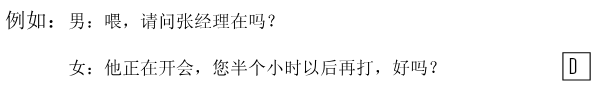
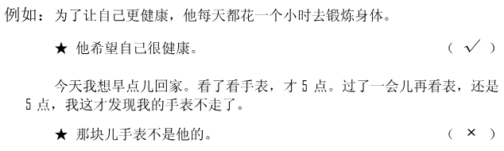
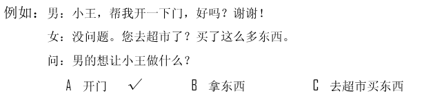
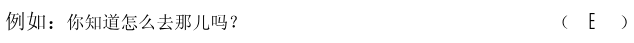
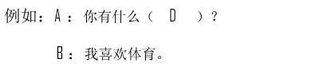
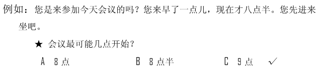

🎧 Phần nghe · Câu 1–40
Bấm phát để bắt đầu nghe. Thời gian làm bài bắt đầu khi bạn nghe hoặc chọn đáp án.
Nghe · Phần 1 · Câu 1–5
Nghe và chọn hình A–F phù hợp.

Nghe · Phần 1 · Câu 6–10
Nghe và chọn hình A–E phù hợp.
Nghe · Phần 2 · Câu 11–20
Nghe và chọn ✓ (đúng) hoặc × (sai).

Câu 11
★北京话和普通话是相同的。
Câu 12
★会议室在8层。
Câu 13
★他已经到了。
Câu 14
★这是辆旧车。
Câu 15
★小孩子爱吃蛋糕。
Câu 16
★他在北京玩了很多地方。
Câu 17
★周明坐火车时喜欢看报纸。
Câu 18
★他喜欢音乐，也喜欢运动。
Câu 19
★她对自己的工作没兴趣。
Câu 20
★他们在买空调。
Nghe · Phần 3 · Câu 21–30
Nghe và chọn đáp án A, B hoặc C.

Câu 21
Câu 22
Câu 23
Câu 24
Câu 25
Câu 26
Câu 27
Câu 28
Câu 29
Câu 30
Nghe · Phần 4 · Câu 31–40
Nghe hội thoại và chọn đáp án A, B hoặc C.

Câu 31
Câu 32
Câu 33
Câu 34
Câu 35
Câu 36
Câu 37
Câu 38
Câu 39
Câu 40
Đọc · Phần 1 · Câu 41–45
Chọn câu A–F phù hợp để ghép với từng câu.

Đọc · Phần 1 · Câu 46–50
Chọn câu A–E phù hợp để ghép với từng câu.
Đọc · Phần 2 · Câu 51–55
Chọn từ A–F điền vào chỗ trống.
Đọc · Phần 2 · Câu 56–60
Chọn từ A–F điền vào chỗ trống của hội thoại.

Đọc · Phần 3 · Câu 61–70
Đọc đoạn văn và chọn đáp án đúng.

Câu 61
人们常说：今天工作不努力，明天努力找工作。
★这句话的意思主要是：
★这句话的意思主要是：
Câu 62
请大家把黑板上的这些词写在本子上，回家后用这些词语写一个小故事，别忘了，最少写100字。
★说话人最可能是做什么的？
★说话人最可能是做什么的？
Câu 63
我对这儿很满意，虽然没有花园，但是离河边很近，那里有草地，有大树，还有鸟；虽然冬天天气很冷，但是空气新鲜，而且房间里一点儿也不冷。
★使他觉得满意的是：
★使他觉得满意的是：
Câu 64
昨天晚上睡得太晚，今天起床时已经8点多了，我刷了牙，洗了脸，就出来了，差点儿忘了关门。到了公司，会议已经开始了。没办法，我只能站在外面等休息时间。
★他今天早上：
★他今天早上：
Câu 65
我去年春节去过一次上海，今年再去的时候，发现那里的变化非常大。经过那条街道时，我几乎不认识了。
★根据这段话，可以知道：
★根据这段话，可以知道：
Câu 66
世界真的很小，我昨天才发现，你给小张介绍的男朋友是我妻子以前的同事。
★小张的男朋友是我妻子：
★小张的男朋友是我妻子：
Câu 67
下班后，在路上遇到一个老同学。好久没见面，我们就在公司旁边那个咖啡馆里坐了坐，一边喝咖啡一边说了些过去的事，所以回来晚了。
★根据这段话，可以知道：
★根据这段话，可以知道：
Câu 68
小刘是一位小学老师，教三年级的数学，他虽然很年轻，但是课讲得很好，同学们都很喜欢他。
★学生为什么喜欢刘老师？
★学生为什么喜欢刘老师？
Câu 69
今天12号了，晚上陈阿姨要来家里，家里有菜，有鱼，还有些羊肉，但是没有水果了，你去买些香蕉、葡萄吧，再买个西瓜？
★家里需要买什么？
★家里需要买什么？
Câu 70
有人问我长得像谁，这个问题不太好回答。家里人一般觉得我的鼻子和耳朵像我爸爸，眼睛像我妈妈。
★关于他，下面哪个是对的？
★关于他，下面哪个是对的？
Viết · Phần 1 · Câu 71–75
Sắp xếp các từ đã cho thành câu hoàn chỉnh.
Phần viết được đối chiếu với đáp án mẫu; bỏ qua khoảng trắng và dấu câu. Điểm hiển thị là điểm luyện tập.

Câu 71
弟弟笑了高兴地
Câu 72
简单上午的考试比较
Câu 73
越来越好变得这个城市的环境了
Câu 74
送给他那位医生一个礼物
Câu 75
其他班的成绩有也很大提高
Viết · Phần 2 · Câu 76–80
Nhập chữ Hán phù hợp với pinyin vào từng ô trống.